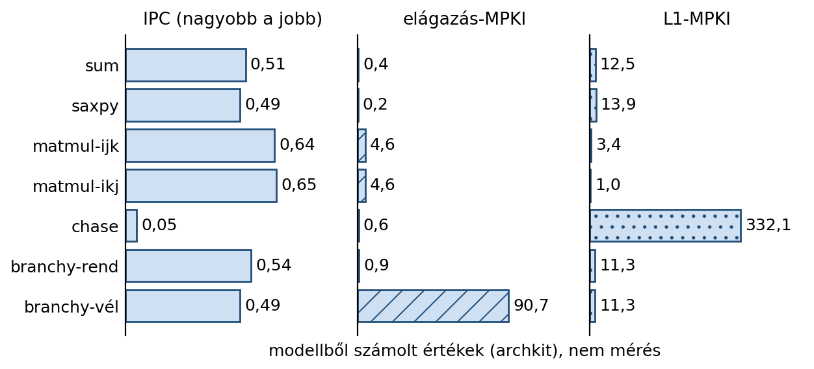

A Statikus becslés és a kétbites számláló
alfejezet branchy mérése furcsa dolgot mutatott: ugyanaz a
ciklus, ugyanannyi utasítás, ugyanazok az adatok – csak más sorrendben
–, és a futásidő mégis nagyságrenddel eltér. Olvassuk be újra a mért
sorokat.
import sys; sys.path.insert(0, "code")
from archkit import perf
meta, rows = perf.read_bench_csv("figures/data/ca033-rendezett-tomb.csv")
for r in rows:
if (r["build"], r["core"], r["variant"]) == ("novec", "P", "branch"):
if r["pattern"] in ("sorted", "random"):
print(f'{r["pattern"]:7}{r["median_ns_per_elem"]:8.4f} ns/elem'
f'{r["cycles_per_elem_est"]:8.2f} ciklus/elem (becslés)')
print(meta["cpu"], "–", meta["date"][:10])sorted 0.2194 ns/elem 1.00 ciklus/elem (becslés)
random 3.1306 ns/elem 14.36 ciklus/elem (becslés)
13th Gen Intel(R) Core(TM) i5-13400F – 2026-11-25Az időmérés megmondja, hogy baj van, de azt nem,
hogy mi a baj. Lehetne cache-hiba, elágazás-tévesztés,
hosszú függőségi lánc vagy akár frekvenciaváltás is. Ahhoz, hogy ne
találgassunk, a processzor belsejéből kell adat: hány ciklus telt el,
hány utasítás fejeződött be, hányszor tévedett az elágazásbecslő, hány
kérés ment a memóriáig. Ezeket a modern processzorok maguk számolják.
Ebben az alfejezetben megtanuljuk, hogyan olvassuk ki őket a Linux
perf eszközével, milyen csapdákat rejtenek a számok, és mit
tegyünk, ha a számlálók nem érhetők el – mint ahogy a könyv mérőgépén
sem.
A teljesítményfigyelő egységet (performance monitoring unit, PMU) úgy képzeljük el, mint egy műszerfalat a mag szélén: néhány számlálókerék, amelyek mindegyikére rákapcsolhatunk egy „érzékelőt” (ciklus, befejezett utasítás, tévesztés). A műszerfalat kétféleképpen használhatjuk.
Az alábbi ábra a mintavételezést egy héttagú ciklusmagon mutatja
(modellből számolva). A mag egy köre 15 ciklus, ebből a div
8. A fekete függőleges jel a valódi részesedés, a kék sáv a mintákból
becsült. Figyeld meg, hogy 149 ciklusos periódussal a sávok 100 minta
után szinte pontosan a jelekig érnek, 150 ciklussal viszont minden minta
ugyanarra az utasításra esik.
A perf mindkét módot ismeri: a perf stat
számlál, a perf record és a perf report
mintavételez.
Definíció. A teljesítményszámláló (performance counter) a mag olyan regisztere, amely egy kiválasztott esemény előfordulásait számolja. Az esemény egy jól körülírt hardveres feltétel, például „ebben a ciklusban befejeződött egy utasítás”.
A számlálók száma korlátos. A mai x86-magokban néhány rögzített számláló (tipikusan ciklus, befejezett utasítás, referenciaciklus) és néhány programozható számláló van; az utóbbiakra eseménykóddal kötünk eseményt (a pontos darabszám és a kódok modellfüggők, ellenőrizendő: a célprocesszor kézikönyve, [S-INTEL-SDM]). Minden logikai CPU-nak saját számlálói vannak, és az operációs rendszer szálváltáskor menti-visszatölti őket, így egy szál eseményeit külön tudjuk mérni.
Az események két csoportra oszthatók:
| Csoport | Példák | Hordozhatóság |
|---|---|---|
| architekturális, általános | ciklus, befejezett utasítás, elágazás, tévesztés | a legtöbb gépen hasonló jelentés |
| mikroarchitekturális | egy adott puffer megtelése, egy port foglaltsága | modellenként más, néha pontatlan |
A táblázat tanulsága: az első csoporttal bárhol dolgozhatunk, a másodikkal csak a konkrét processzor leírásával a kezünkben.
A nyers darabszámok önmagukban keveset mondanak; arányokat képzünk belőlük:
Itt a befejezett utasítások, a ciklusok száma. Az IPC a gép kihasználtságát, az MPKI azt mutatja, ezer utasításonként hányszor történik drága esemény, a hibaarány pedig azt, hogy az adott típusú műveletek hányad része drága. A három mutató mást mond: egy ciklus, amely ritkán nyúl memóriához, de akkor mindig hibázik, 100%-os hibaarányú lehet, mégis alacsony MPKI-jú.
Multiplexelés. Ha több eseményt kérünk, mint ahány
programozható számláló van, a kernel időben váltogatja őket: egy esemény
csak az idő egy részében számol. A Linux megadja, mennyi ideig volt az
esemény bekapcsolva
(,
enabled) és mennyi ideig számolt valóban
(,
running), a perf pedig felskáláz:
A
tehát becslés: azt feltételezi, hogy a program a nem
mért időben is ugyanúgy viselkedett. Egy rövid, szakaszokra tagolt
programnál ez a feltevés könnyen hamis. A perf stat a sor
végén zárójelben írja ki, az idő hány százalékában számolt az
esemény.
Csúszás (skid). Mintavételezéskor a megszakítás nem
azonnal érkezik: a mag addigra néhány utasítással továbbhalad, ezért a
feljegyzett PC gyakran a „tettes” utáni utasításra mutat. Az
ábra utolsó panelje ezt mutatja: a div mintáinak többsége a
következő add sorában jelenik meg. Egyes processzorok
pontos mintavételt kínálnak (Intelnél PEBS; ellenőrizendő: mely
eseményekre), amelyet a perf-ben az eseménynév
:p vagy :pp utótagja kér.
Virtualizáció és jogosultság. Virtuális gépben vagy
konténerben a PMU gyakran nem vagy csak részben látszik. Linuxon a
/proc/sys/kernel/perf_event_paranoid értéke szabályozza,
mit tehet a rendszergazdai jog nélküli felhasználó: nagyobb érték
szigorúbb tiltás. A könyv mérőgépén az érték 4, és a
perf stat ezt válaszolja (a hibaüzenet eleje):
perf stat -e cycles,instructions trueError:
No supported events found.
Access to performance monitoring and observability operations is limited.
Consider adjusting /proc/sys/kernel/perf_event_paranoid setting to open
access to performance monitoring and observability operations for processes
without CAP_PERFMON, CAP_SYS_PTRACE or CAP_SYS_ADMIN Linux capability.Ezért ebben a könyvben egyetlen hardveres számlálóértéket sem közlünk
mérésként. Ha a saját gépeden van jogod, a beállítást
sudo sysctl kernel.perf_event_paranoid=1 (vagy az üzenetben
ajánlott érték) módosítja – közös gépen előbb kérdezd meg az
üzemeltetőt, mert a számlálók más folyamatok viselkedéséről is
elárulhatnak valamit (lásd Cache-mellékcsatornák).
A leggyakoribb hívás egy programot futtat végig, és a végén kiírja az eseményszámokat:
perf stat -e cycles,instructions,branches,branch-misses,cache-misses ./prog
taskset -c 2 perf stat -r 10 -e cycles,instructions ./prog
perf stat -e cycles:u,instructions:u ./progA második sor a programot a 2-es CPU-hoz köti (hibrid processzoron ez
dönti el, hogy P- vagy E-magot mérünk), és tízszer futtatja, a szórással
együtt. A harmadik sor :u utótagja csak a felhasználói
módban történt eseményeket kéri. A mért eredmények értelmezésekor
ugyanazok a szabályok érvényesek, mint a Benchmarkolás: mérni tanulni alfejezetben: több
ismétlés, rögzített mag, bemelegítés.
A perf stat a teljes programot méri, az
inicializálást és a beolvasást is. Ha csak egy kernelre vagyunk
kíváncsiak, vagy futtassuk elég sokáig, hogy a kernel uralja az időt,
vagy a számlálót a saját kódunkból kapcsoljuk be és ki (lásd a Kód
szakaszt).
g++ -O2 -g prog.cpp -o prog
perf record -e cycles -F 4000 ./prog
perf report --stdio
perf annotate --stdio kernel_nameA -F 4000 másodpercenként kb. 4000 mintát kér (a kernel
ehhez igazítja a periódust), a -c kapcsoló ehelyett
rögzített eseményszámot ad meg periódusnak. A report
függvényenként, az annotate utasításonként mutatja a minták
arányát; a -g fordítási kapcsoló kell ahhoz, hogy a
forrássorok is látszódjanak. Az annotate olvasásakor tartsd
észben a csúszást: a magas százalék gyakran egy sorral lejjebb van, mint
a valódi ok. Grafikus profilozók (például az Intel VTune) ugyanezekre az
eseményekre épülnek; ezeket itt nem tárgyaljuk.
Legyen a mintából az -edik utasításon. Az utasítás idő-részesedésének becslése és ennek standard hibája:
A becslés annál pontosabb, minél több a minta, de a hiba csak a mintaszám négyzetgyökével csökken: feleakkora hibához négyszer annyi minta kell. A képlet független mintákat feltételez, ami nem teljesül, ha a periódus „ritmusban van” a programmal.
Definíció. Rezonanciáról (aliasing) akkor beszélünk, ha a mintavételi periódus és a program egy ismétlődő szakaszának hossza közös osztóval rendelkezik, ezért a minták mindig ugyanazokra a pontokra esnek.
Ha a ciklus
ciklusidejű, és a periódus
,
akkor a minták a cikluson belül csak
különböző helyre eshetnek (lnko: legnagyobb közös osztó).
,
esetén ez egyetlen hely. Három védekezés van: prím vagy a programtól
független periódus, véletlen ingadozás a periódusban, és a
-F módban a kernel folyamatos periódus-igazítása. Valódi
programban a ciklusidő nem egész és nem állandó, ezért a tökéletes
rezonancia ritka, de a rejtett torzítás nem.
Továbbvitt eredmény. A számlálóalapú mérés lépései:
(1) a kérdéshez kevés, jól megválasztott esemény, hogy ne legyen
multiplexelés; (2) arányok (IPC, MPKI, hibaarány) a nyers számok
helyett; (3) a mintavétel eredménye becslés, standard hibával és
csúszással. Ha a számlálók nem érhetők el, a tartalék
út: időmérés a Benchmarkolás: mérni
tanulni szabályaival, a jelenség magyarázata pedig szimulátorral
(archkit.cache, archkit.bpred,
archkit.pipeline), a modellszámokat kifejezetten modellnek
jelölve. Ezt használja A top-down elemzési
módszer, az Esettanulmány: mérésvezérelt
optimalizálás és a 2–3. záróprojekt:
cache-szimulátor és mikrobenchmark-sorozat.
A tartalék út számait egy virtuális PMU adja: a
könyv szimulátorlánca (ötszakaszos futószalag, 256 bejegyzéses kétbites
becslő, 1 KiB L1 és 8 KiB L2 cache; L2-találat +8, memória +60 ciklus) a
branchy kernel 1024 elemén a következő értékeket adja.
Ezek modellértékek, nem mérés.
| Számláló | rendezett adat | véletlen adat |
|---|---|---|
| ciklus | 10 540 | 11 556 |
| utasítás | 5658 | 5658 |
| feltételes elágazás | 2048 | 2048 |
| tévesztés | 5 | 513 |
Az utolsó pont fontos módszer: két futás különbségéből egy esemény árát becsüljük, ha a két futás csak ebben tér el. A valódi gépen ugyanez a számítás sokkal nagyobb, két számjegyű ciklusszámot ad, mert a futószalag mélyebb (a mért adat elemzését a 2. záróprojektben végezzük el).
from archkit import riscv, pipeline, bpred, cache
def virtual_pmu(src):
m = riscv.run(src)
l1 = cache.Cache(size=1024, block=64, ways=2)
l2 = cache.Cache(size=8192, block=64, ways=8)
mem = cache.Hierarchy([l1, l2], hit_times=[1, 8], mem_time=52)
def delay(ins): # többletciklus a MEM-ben
return mem.access(ins.addr, ins.kind == "store")["cycles"] - 1
r = pipeline.simulate(m.trace, predictor=bpred.Bimodal(256), mem_delay=delay,
mul_latency=3, div_latency=16)
return {"cycles": r.cycles, "instr": r.n, "branches": r.branches,
"br-miss": r.mispredicts, "L1-miss": l1.stats.misses}
kernels = {
"branchy rendezett": riscv.branchy_src(riscv.branchy_data(1024, ordered=True)),
"branchy véletlen": riscv.branchy_src(riscv.branchy_data(1024)),
"chase": riscv.chase_src(256, 1024),
}
for label, src in kernels.items():
c = virtual_pmu(src)
n = c["instr"]
print(f"{label}:", ", ".join(f"{k} {v}" for k, v in c.items()))
print(f" IPC {n / c['cycles']:.3f} elágazás-MPKI {1000 * c['br-miss'] / n:.2f}"
f" L1-MPKI {1000 * c['L1-miss'] / n:.1f}")branchy rendezett: cycles 10540, instr 5658, branches 2048, br-miss 5, L1-miss 64
IPC 0.537 elágazás-MPKI 0.88 L1-MPKI 11.3
branchy véletlen: cycles 11556, instr 5658, branches 2048, br-miss 513, L1-miss 64
IPC 0.490 elágazás-MPKI 90.67 L1-MPKI 11.3
chase: cycles 64535, instr 3083, branches 1024, br-miss 2, L1-miss 1024
IPC 0.048 elágazás-MPKI 0.65 L1-MPKI 332.1A harmadik sor egy másik betegséget mutat: a chase
(mutatókövetés) minden betöltése hibázik az L1-ben, és az IPC 0,05-re
esik. A következő ábra a futó kernelek virtuális számlálóit mutatja
egymás mellett: a sávhosszak panelenként külön skálázottak.

Olvassuk az ábrát soronként: a chase kiugró L1-MPKI-ja
magyarázza a legkisebb IPC-t; a véletlen branchy az
egyetlen, ahol az elágazás a fő tünet; a matmul két
ciklussorrendje között az L1-MPKI háromszoros eltérése a ciklusszámban
alig látszik, mert ennél a kis mátrixnál a számolás dominál.
Az archkit.topdown.sample_loop a ciklusmag
utasításonkénti költségeiből szimulálja a mintákat. A költségeket a
futószalag-szimulátor adja: egy utasításé az az idő, amíg ő a legrégebbi
be nem fejezett.
from archkit import topdown
costs = [1, 2, 8, 1, 1, 1, 1] # lw, add, div, add, addi, addi, bnez
for period, skid, jitter in [(149, 0, 0), (150, 0, 0), (149, 1, 0), (150, 0, 20)]:
s = topdown.sample_loop(costs, 1000, period, skid=skid, jitter=jitter)
print(f"P={period} csúszás={skid} ±{jitter:2}: {s.hist} max. eltérés "
f"{100 * s.max_error:4.1f} sz.p.")
print(f"várható hiba a div-nél: {100 * topdown.sampling_error(8 / 15, 100):.1f} sz.p.")P=149 csúszás=0 ± 0: [6, 12, 55, 7, 7, 7, 6] max. eltérés 1.7 sz.p.
P=150 csúszás=0 ± 0: [0, 0, 0, 0, 0, 0, 100] max. eltérés 93.3 sz.p.
P=149 csúszás=1 ± 0: [6, 6, 12, 55, 7, 7, 7] max. eltérés 48.3 sz.p.
P=150 csúszás=0 ±20: [9, 20, 47, 3, 8, 3, 9] max. eltérés 6.9 sz.p.
várható hiba a div-nél: 5.0 sz.p.A negyedik sor megmutatja, hogy a véletlen ingadozás megszünteti a rezonanciát, a maradék eltérés pedig már a 100 mintából adódó, kb. 5 százalékpontos statisztikai hiba nagyságrendje.
Ha csak egy kernelt akarunk mérni, a perf_event_open
rendszerhívással a saját programunkból nyitunk számlálót. A könyv
code/bench/perf_counters.hpp burkolója négy eseményt tesz
egy csoportba, így mind egyszerre számol, vagy egyik
sem. A lényeg:
perf_event_attr attr;
std::memset(&attr, 0, sizeof(attr));
attr.size = sizeof(attr);
attr.type = PERF_TYPE_HARDWARE;
attr.config = config[static_cast<std::size_t>(i)];
attr.disabled = i == 0; // a csoportot a vezető indítja
attr.exclude_kernel = 1;
attr.exclude_hv = 1;
attr.read_format = PERF_FORMAT_GROUP | PERF_FORMAT_TOTAL_TIME_ENABLED |
PERF_FORMAT_TOTAL_TIME_RUNNING;
// pid = 0: a hívó szál; cpu = -1: bármelyik CPU-n; group_fd: a vezető leírója.
const long fd = syscall(SYS_perf_event_open, &attr, 0, -1, i ? fd_[0] : -1, 0UL);A mérés körül ioctl hívásokkal nullázzuk, indítjuk és
leállítjuk a csoportot, majd egyetlen read adja a
darabszámokat és a két időt, amelyből a multiplexelési skálázás
következik. A burkoló futásidőben ellenőriz: ha a megnyitás sikertelen,
a program időmérést végez, és megírja az okot. Fordítás és futtatás:
cd code/bench
g++ -O2 -fno-tree-vectorize -std=c++20 -pthread bench_perf.cpp -o /tmp/bench_perf
/tmp/bench_perf --cpu 2 --elems 1048576A könyv gépén a kimenet számlálókra vonatkozó sora:
# perf: nem elérhető (cycles: Permission denied)Hibrid processzoron az általános eseménytípus a P- és az E-magok külön PMU-ja miatt kerülőutat igényelhet (ellenőrizendő: a futó kernelverzió viselkedése); rögzítsd a programot egy magtípusra, és ellenőrizd, hogy az utasításszám a várt nagyságrendű.
A mintavételezés interaktív ábráján (a Szemlélet szakaszban) a lejátszás mintánként halad.
bnez) esik. Az idővonalon figyeld meg, hogy a mintajel
mindig a kör utolsó ciklusára mutat.div sávja
visszaközelíti a fekete jelet, de nem pontosan.annotate szerint egy olcsó
add viszi az idő felét. Ok: csúszás, a
valódi ok az előtte lévő hosszú utasítás vagy betöltés.
Javítás: nézd az előző utasításokat, vagy kérj pontos
mintavételt (cycles:pp).perf stat IPC-je alacsony,
pedig a kernel gyors. Ok: a teljes programot mérted,
benne a lassú adat-előkészítéssel. Javítás: a mérés
idejét uralja a kernel, vagy a saját kódból kapcsold a számlálót.<not supported> áll. Ok:
a hipervizor nem adja tovább a PMU-t. Javítás: tartalék
út – időmérés és szimulátoros magyarázat, a modellértékek
jelölésével.perf stat egy esemény mellé 40%-os
futási arányt ír?perf nem használható?chase kernelre
64 535 ciklust, 3083 utasítást, 1024 betöltést és 1024 L1-hibát adott.
Számold ki az IPC-t, az L1-MPKI-t és az L1 hibaarányt. Melyik mutatja
legjobban a baj súlyát?perf stat futásban a nyers
cache-misses érték
,
az esemény 2,0 másodpercig volt bekapcsolva, de csak 0,5 másodpercig
számolt. Mi a skálázott becslés, és mikor félrevezető?sample_loop
függvénnyel a
és
esetet, és magyarázd meg a különbséget.sample_loop-pal, hogy
mellett a 0–40 közötti ingadozások közül melyek adnak 5 százalékpontnál
kisebb legnagyobb eltérést. Miért nem monoton az eredmény?bench_perf
programot a saját gépeden, rögzített magon futtasd rendezett és véletlen
adatra. Ha elérhetők a számlálók, becsüld meg a két futás különbségéből
egy tévesztés árát; ha nem, a futásidőből és a feltételezett 50%-os
tévesztési arányból. Írd le a mérés feltételeit.A teljesítményfigyelő egység korlátos számú számlálója hardveres
eseményeket mér. Számlálásnál (perf stat) összegeket,
mintavételezésnél (perf record) eloszlást kapunk. A nyers
számok helyett arányokat használunk: IPC, MPKI, hibaarány. A
multiplexelés skálázott becslést ad, a csúszás a mintát a valódi ok
utáni utasításra tolja, a programmal rezonáló periódus torzít; a minták
statisztikai hibája
.
A számlálóalapú mérés lépései: kevés esemény, arányok, hibával
értelmezett minták. Ha nincs jogosultság vagy PMU, a tartalék út az
időmérés és a szimulátoros magyarázat (cache-, becslő- és
futószalag-modell), a modellből származó számokat kifejezetten jelölve.
Két futás különbségéből egy esemény ára becsülhető, ha a futások csak
ebben térnek el. Ezt a módszert használja a top-down elemzés, a
mérésvezérelt optimalizálási esettanulmány és a mikrobenchmark-projekt
gépjellemzése.
1. ; ; hibaarány . A 100% azt mondja, hogy a cache egyáltalán nem segít, az MPKI pedig azt, hogy ez az utasítások harmadát érinti – a kettő együtt magyarázza a 0,05-ös IPC-t.
2. . Félrevezető, ha a program szakaszos (például az első fele memóriaintenzív, a második számol), mert a 25%-os mérési ablak nem reprezentatív.
3. , tehát minta.
4. Rezonancia lép fel, ha . : egyetlen helyre esnek a minták. : , három különböző helyre.
for P in (100, 105):
s = topdown.sample_loop(costs, 1000, P)
print(P, len(s.samples), s.hist)100 150 [0, 0, 100, 0, 0, 0, 50]
105 142 [0, 0, 0, 0, 0, 0, 142]
esetén a három hely közül kettő a div 8 ciklusára, egy a
bnez-re esik, ezért a div 67%-ot, a
bnez 33%-ot kap, a többi utasítás nullát.
5.
good = [j for j in range(41)
if topdown.sample_loop(costs, 1000, 150, jitter=j).max_error < 0.05]
print(good)[6, 8, 15, 21, 23, 24, 25, 27, 33, 40]Az ingadozás a rendszeres torzítást szünteti meg
(6-tól a minták a kör sok helyére eljutnak), a maradék eltérés viszont
véletlen: 100 mintánál a div részesedésének standard hibája
kb. 5 százalékpont, ezért a küszöb körüli eredmény véletlenszerűen esik
alá vagy fölé. Több körrel (több mintával) a lista bővülne.
6. A megoldás vázlata: legalább 11 ismétlés, medián
és kvartilisek, --cpu rögzítés. Számlálóval az egy elemre
jutó ciklus- és tévesztésszám különbségének hányadosa adja a büntetést.
Számlálók nélkül az időkülönbséget a (becsült) órajellel ciklusra
váltjuk, és elosztjuk 0,5-tel. A jegyzőkönyvben szerepeljen a CPU, a
fordító és a kapcsolók, a frekvenciaszabályozó és a háttérterhelés; a
két módszer eltérése abból is adódhat, hogy a véletlen adaton a ciklus
nemcsak tévesztést, hanem hosszabb függőségeket is kap.